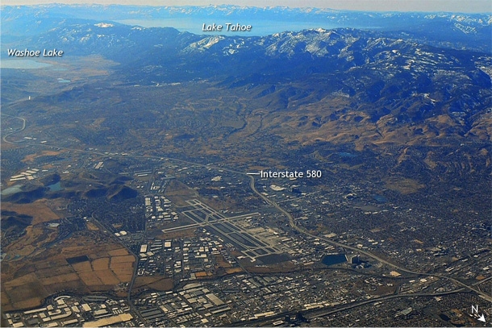
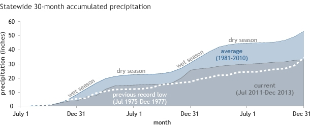
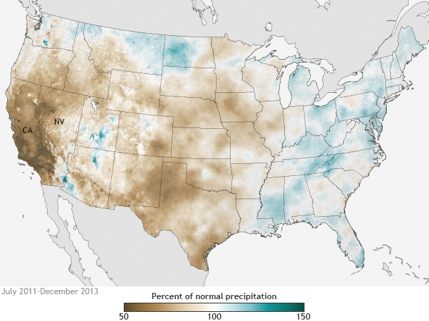
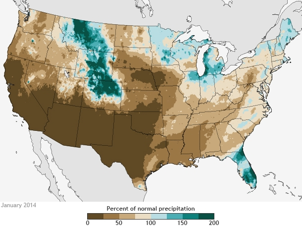

The most populated state in the country is facing what may be its
worst drought in a century of record-keeping. On January 20, the
governor of California declared a state of emergency, urging everyone
to begin conserving water. Water levels in all but a few reservoirs in
the state are less than 50% of capacity, mountains are nearly bare of
snow except at the highest elevations, and the fire risk is extreme.
In Nevada, the situation is much the same.

Aerial view of Reno, Nevada (foreground), and Lake Tahoe (background)
on January 14, 2014. Between the city and the lake, the mountains are
nearly bare of snow, an unmistakable sign of precipitation deficits.
Photo by Kelly Redmond.
California has a climate like the Mediterranean region: hot, dry summers
and mild, wet winters. More than half of the annual precipitation arrives
via winter storms between December and February. For the third winter in a
row, precipitation has been below normal across the state. The last week of
January is the midway point of the winter wet season, and accumulated
precipitation since July is the lowest on record.
The current conditions are the product of several poor wet seasons in
succession. The past 30 months—encompassing the past two winter wet seasons
and the first half of the current one—are the driest since 1895 for
comparable months.
On average, California will accumulate more than 53 inches of precipitation
statewide over a typical 30-month span stretching from July to December, based
on NOAA Climate Division Data. (Of course, there are huge differences from place
to place based on elevation.) In the 30 months preceding December 2013, the
state has received closer to 33 inches, just a bit less than the previous record
low for a similar period, from July 1975-December 1977.

How precipitation accumulates across California over the span of 30 months
beginning in July and ending in the third following December on average
(dark blue) and most recently (gray, July 2011-December 2013). Precipitation
in California is sharply seasonal, with a winter wet season and a summer dry
season. Graph adapted from original by Nina Oakley, based on NOAA Climate
Division Data.
Author: Rebecca Lindsey
Reviewer(s):
Kelly Redmond, and
Nina Oakley
January precipitation deficits keep California drought outlook grim
In our first post on the drought emergency in California and Nevada, we talked about
conditions on a statewide level over the past two and half years. But a statewide
average over a relatively long period can hide important variation from place to place,
especially in a mountainous state like California, where the high elevations can get
several times more average annual precipitation than adjacent valleys do.

The map above shows the relative dryness from place to place, revealing that the 30-month
precipitation deficits ending in December 2013 were more severe in southern California
than northern California, and generally appear to be more severe in the mountains than in
lower elevations. The accentuation of deficits over higher elevations is particularly
meaningful, because it is in mountain catchments where much of California’s water resources
are generated.
A little more than half the state’s precipitation typically arrives via winter storms in
December through February. Observations collected during January indicate that no relief
occurred; in fact the extreme lack of precipitation during October through December 2013
has intensified the deficit that had developed during the previous two water years.
Throughout the area, ranchers with no pasture for their cattle are being forced to sell;
wells are going dry, and wildfire responders are confronting small blazes in forests that
are usually deep in snow this time of year.

Percent of normal precipitation in January 2014 compared to the 1981-2010 average,
based on preliminary PRISM data. Most of California, southern Nevada, Arizona,
New Mexico, and Texas received 25% or less of their normal precipitation.
Unfortunately, NOAA climate scientists couldn’t give Californians any good news when they
issued their monthly U.S. drought outlook on January 31, 2014. Drought is likely to continue
or worsen through February across virtually all of California and the rest of the West Coast.
Drought is likely to envelop the portion of the state that was not already in drought—a small
sliver in the extreme southeast where California meets Nevada and Arizona.